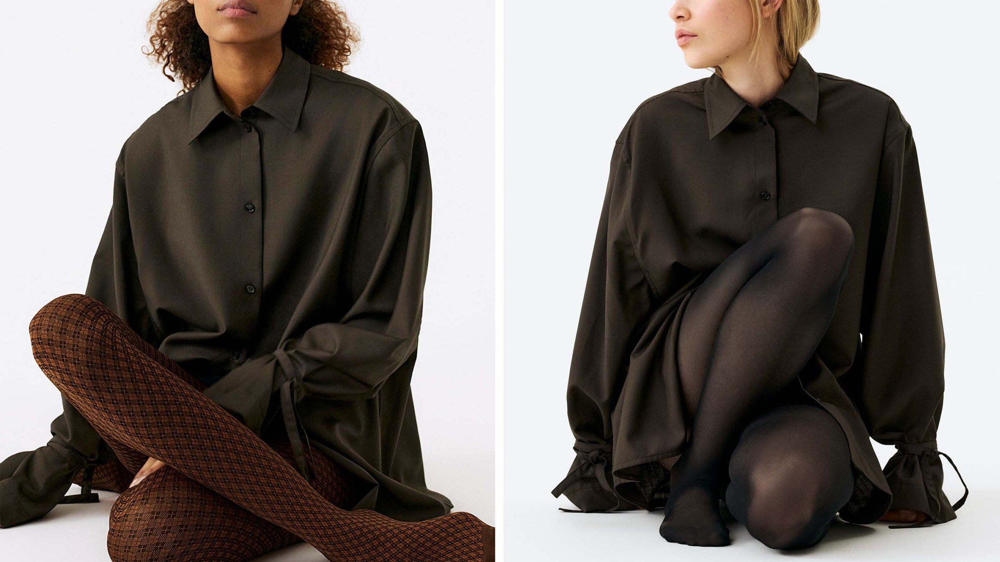
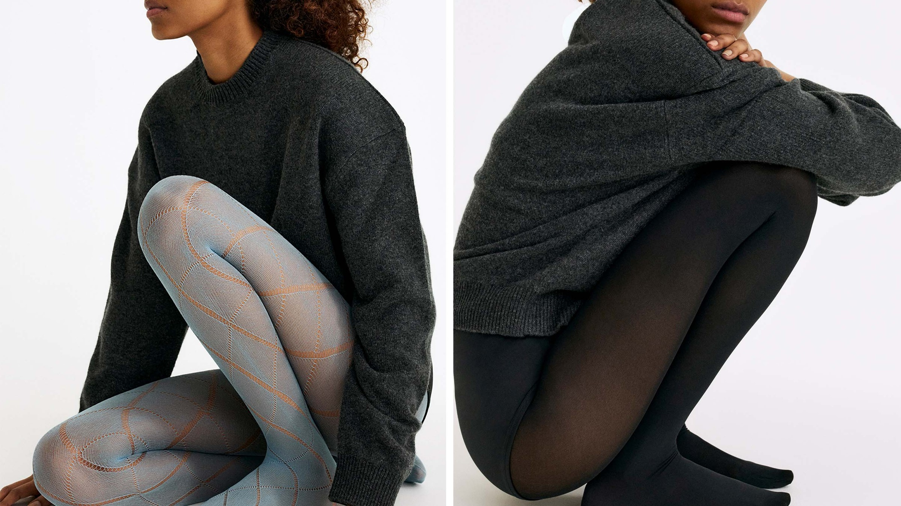
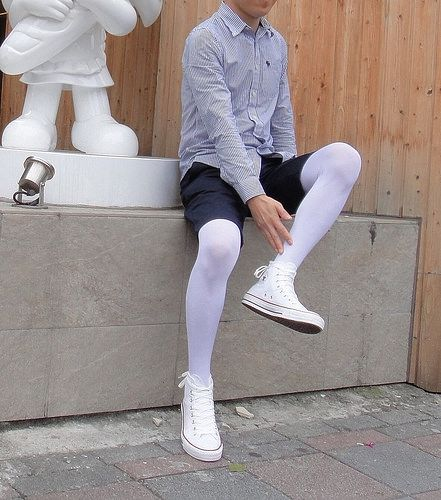
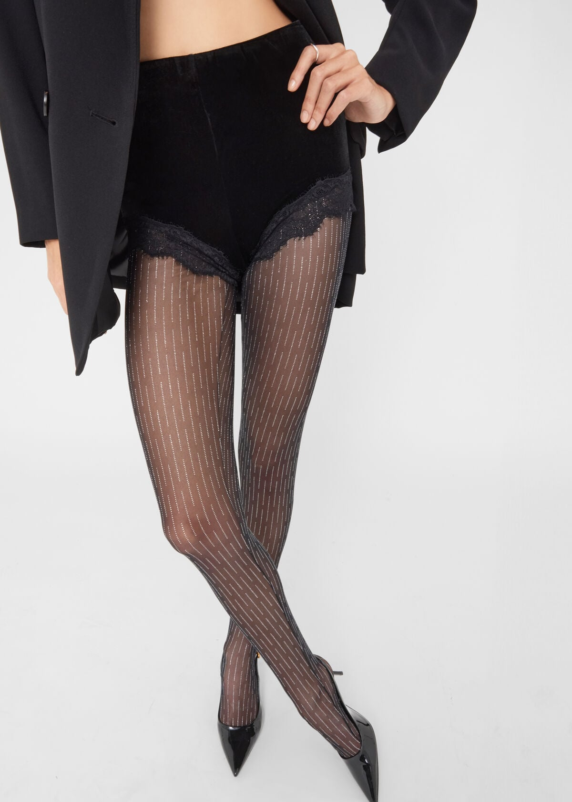

Материал. Силуэт. Ощущение.
Красота.
В деталях.
Прозрачность, блеск, рисунок. Смотрите крупно, замечайте фактуру и находите новые сочетания.
Смотреть галерею ↗Найти свою пару →
Лента публикаций
Сейчас в
чулочной моде.
Коллекции, сочетания и новые взгляды на знакомую вещь. Публикации брендов и модных изданий в одной ленте.
Последняя успешная проверка: 16.11.2026 07:28 UTC.
Шерстяные колготки: как искать мягкость, а не только процент шерсти
Читать на ТОНКО →Почему рвутся чулки — и как уменьшить трение в обуви
Читать на ТОНКО →Блестящие колготки Хейли Бибер: что известно о Rainy Glitter
Читать на ТОНКО →Тёплые колготки с эффектом прозрачности: что предлагает Oroblù
Читать на ТОНКО →Праздничная Calzedonia: кристаллы, кружево и акцент на колготках
Читать на ТОНКО →Как обновляется лента и откуда новости
Источники проверяются по расписанию каждые 15 минут. Возможны задержки сервиса и самих изданий. Новость появляется после попадания в RSS или поисковую ленту, а не в момент любой публикации в интернете.
Часть заголовков переведена на русский. Автоматические пересказы помечены «AI-пересказ»; при недостатке данных остаётся короткий анонс. Дата рядом с материалом принадлежит источнику; время проверки ленты указано отдельно. Для ссылок с отметкой Google News сначала открывается агрегатор. При сбое сохраняем предыдущие записи.
- Google News · выбранные изданияДоступен
- Who What WearДоступен
- FashionUnitedДоступен
- Swedish StockingsДоступен
- SnagДоступен
- BracatusДоступен
Колготки в гардеробе
Вещи складываются
в образ.
Косуха, трикотаж, юбка или шорты. Женские и мужские сочетания из съёмок брендов и подборки ТОНКО.




Все образы: 10 ↗Источник каждой фотографии — в галерее
Логотипы. Модели. Детали.
Знакомство
с упаковки.
386 изображений, 19 брендов. Упаковки и фирменные вкладыши: поиск по модели, сравнение оформления и просмотр крупным планом.


Новый журнал ТОНКО
Внимательнее
к каждой детали.
Шесть историй о свете, узорах, устройстве вещи и людях за брендами. Начните с того, что вам любопытно.
Выбрать, что почитать ↗ Кружево. Подойдите ближе ↗
Кружево. Подойдите ближе ↗У каждой фактуры
свой характер.
Графичная сетка, кружево и мерцание. Три способа сделать колготки главным акцентом образа.


Попробовать, а не только прочитать
Что изменится,
если выбрать 20 DEN?
Сравните плотность, разберите конструкцию и соберите критерии своей пары.
Открыть мастерскую выбора ↗
За пределами
привычного.


Имена, которые
меняли индустрию.
43 бренда: история, технологии и конкретные модели с источниками.
 Открыть видеотеку ↗
Открыть видеотеку ↗Теперь в движении
Смотреть.
Сравнивать. Замечать.
Видео Snag в собственном плеере, пять видео Vimeo, обзоры и примерки YouTube. Выберите тему и сохраните ролики на потом.
Все видео →